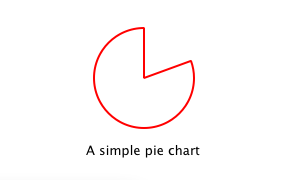

Writing QML Extensions with C++
The Qt Qml module provides a set of APIs for extending QML through C++ extensions. You can write extensions to add your own QML types, extend existing Qt types, or call C/C++ functions that are not accessible from ordinary QML code.
This tutorial shows how to write a QML extension using C++ that includes core QML features, including properties, signals and bindings. It also shows how extensions can be deployed through plugins.
Many of the topics covered in this tutorial are documented in further detail in Overview - QML and C++ Integration and its documentation sub-topics. In particular, you may be interested in the sub-topics Exposing Attributes of C++ Classes to QML and Defining QML Types from C++.
Opening the Tutorial Sources
The code in this tutorial is available as part of the Qt sources. If you installed Qt with the Qt Online Installer, you can find the sources in the Qt installation directory under Examples/Qt-6.7.0/qml/tutorials/extending-qml/.
Creating Project from Scratch
Alternatively, you can follow the tutorial by creating the sources from scratch: For each chapter, create a new project using the Qt Quick Application template in Qt Creator, as instructed in Qt Creator: Creating Qt Quick Projects. Then follow along by adapting and extending the generated skeleton code.
Chapter 1: Creating a New Type
extending-qml/chapter1-basics
A common task when extending QML is to provide a new QML type that supports some custom functionality beyond what is provided by the built-in Qt Quick types. For example, this could be done to implement particular data models, or provide types with custom painting and drawing capabilities, or access system features like network programming that are not accessible through built-in QML features.
In this tutorial, we will show how to use the C++ classes in the Qt Quick module to extend QML. The end result will be a simple Pie Chart display implemented by several custom QML types connected together through QML features like bindings and signals, and made available to the QML runtime through a plugin.
To begin with, let's create a new QML type called "PieChart" that has two properties: a name and a color. We will make it available in an importable type namespace called "Charts", with a version of 1.0.
We want this PieChart type to be usable from QML like this:
import Charts PieChart { width: 100; height: 100 name: "A simple pie chart" color: "red" }
To do this, we need a C++ class that encapsulates this PieChart type and its two properties. Since QML makes extensive use of Qt's meta object system, this new class must:
- Inherit from QObject
- Declare its properties using the Q_PROPERTY macro
Class Declaration
Here is our PieChart class, defined in piechart.h:
#include <QtQuick/QQuickPaintedItem> #include <QColor> class PieChart : public QQuickPaintedItem { Q_OBJECT Q_PROPERTY(QString name READ name WRITE setName FINAL) Q_PROPERTY(QColor color READ color WRITE setColor FINAL) QML_ELEMENT public: PieChart(QQuickItem *parent = nullptr); QString name() const; void setName(const QString &name); QColor color() const; void setColor(const QColor &color); void paint(QPainter *painter) override; private: QString m_name; QColor m_color; };
The class inherits from QQuickPaintedItem because we want to override QQuickPaintedItem::paint() to perform drawing operations with the QPainter API. If the class just represented some data type and was not an item that actually needed to be displayed, it could simply inherit from QObject. Or, if we want to extend the functionality of an existing QObject-based class, it could inherit from that class instead. Alternatively, if we want to create a visual item that doesn't need to perform drawing operations with the QPainter API, we can just subclass QQuickItem.
The PieChart class defines the two properties, name and color, with the Q_PROPERTY macro, and overrides QQuickPaintedItem::paint(). The PieChart class is registered using the QML_ELEMENT macro, to allow it to be used from QML. If you don't register the class, app.qml won't be able to create a PieChart.
qmake Setup
For the registration to take effect, the qmltypes option is added to CONFIG in the project file and a QML_IMPORT_NAME and QML_IMPORT_MAJOR_VERSION are given:
CONFIG += qmltypes QML_IMPORT_NAME = Charts QML_IMPORT_MAJOR_VERSION = 1
CMake Setup
Similarly, for the registration to take effect when using CMake, use the qt_add_qml_module command:
qt_add_qml_module(chapter1-basics
URI Charts
QML_FILES app.qml
NO_RESOURCE_TARGET_PATH
DEPENDENCIES QtQuick
)
Class Implementation
The class implementation in piechart.cpp simply sets and returns the m_name and m_color values as appropriate, and implements paint() to draw a simple pie chart:
PieChart::PieChart(QQuickItem *parent) : QQuickPaintedItem(parent) { } ... void PieChart::paint(QPainter *painter) { QPen pen(m_color, 2); painter->setPen(pen); painter->setRenderHints(QPainter::Antialiasing, true); painter->drawPie(boundingRect().adjusted(1, 1, -1, -1), 90 * 16, 290 * 16); }
QML Usage
Now that we have defined the PieChart type, we will use it from QML. The app.qml file creates a PieChart item and displays the pie chart's details using a standard QML Text item:
import Charts import QtQuick Item { width: 300; height: 200 PieChart { id: aPieChart anchors.centerIn: parent width: 100; height: 100 name: "A simple pie chart" color: "red" } Text { anchors { bottom: parent.bottom; horizontalCenter: parent.horizontalCenter; bottomMargin: 20 } text: aPieChart.name } }
Notice that although the color is specified as a string in QML, it is automatically converted to a QColor object for the PieChart color property. Automatic conversions are provided for various other value types. For example, a string like "640x480" can be automatically converted to a QSize value.
We'll also create a C++ application that uses a QQuickView to run and display app.qml.
Here is the application main.cpp:
#include "piechart.h" #include <QtQuick/QQuickView> #include <QGuiApplication> int main(int argc, char *argv[]) { QGuiApplication app(argc, argv); QQuickView view; view.setResizeMode(QQuickView::SizeRootObjectToView); view.setSource(QUrl("qrc:///app.qml")); view.show(); return QGuiApplication::exec(); }
Project Build
To build the project we include the files, link against the libraries, and define a type namespace called "Charts" with version 1.0 for any types exposed to QML.
Using qmake:
QT += qml quick
CONFIG += qmltypes
QML_IMPORT_NAME = Charts
QML_IMPORT_MAJOR_VERSION = 1
HEADERS += piechart.h
SOURCES += piechart.cpp \
main.cpp
RESOURCES += chapter1-basics.qrc
DESTPATH = $$[QT_INSTALL_EXAMPLES]/qml/tutorials/extending-qml/chapter1-basics
target.path = $$DESTPATH
INSTALLS += target
Using CMake:
# Copyright (C) 2022 The Qt Company Ltd.
# SPDX-License-Identifier: BSD-3-Clause
cmake_minimum_required(VERSION 3.16)
project(chapter1-basics LANGUAGES CXX)
set(CMAKE_AUTOMOC ON)
if(NOT DEFINED INSTALL_EXAMPLESDIR)
set(INSTALL_EXAMPLESDIR "examples")
endif()
set(INSTALL_EXAMPLEDIR "${INSTALL_EXAMPLESDIR}/qml/tutorials/extending-qml/chapter1-basics")
find_package(Qt6 REQUIRED COMPONENTS Core Gui Qml Quick)
qt_add_executable(chapter1-basics
main.cpp
piechart.cpp piechart.h
)
set_target_properties(chapter1-basics PROPERTIES
WIN32_EXECUTABLE TRUE
MACOSX_BUNDLE TRUE
)
target_link_libraries(chapter1-basics PUBLIC
Qt6::Core
Qt6::Gui
Qt6::Qml
Qt6::Quick
)
qt_add_qml_module(chapter1-basics
URI Charts
QML_FILES app.qml
NO_RESOURCE_TARGET_PATH
DEPENDENCIES QtQuick
)
install(TARGETS chapter1-basics
RUNTIME DESTINATION "${INSTALL_EXAMPLEDIR}"
BUNDLE DESTINATION "${INSTALL_EXAMPLEDIR}"
LIBRARY DESTINATION "${INSTALL_EXAMPLEDIR}"
)
Now we can build and run the application:

Note: You may see a warning Expression ... depends on non-NOTIFYable properties: PieChart::name. This happens because we add a binding to the writable name property, but haven't yet defined a notify signal for it. The QML engine therefore cannot update the binding if the name value changes. This is addressed in the following chapters.
Chapter 2: Connecting to C++ Methods and Signals
extending-qml/chapter2-methods
Suppose we want PieChart to have a "clearChart()" method that erases the chart and then emits a "chartCleared" signal. Our app.qml would be able to call clearChart() and receive chartCleared() signals like this:
import Charts import QtQuick Item { width: 300; height: 200 PieChart { id: aPieChart anchors.centerIn: parent width: 100; height: 100 color: "red" onChartCleared: console.log("The chart has been cleared") } MouseArea { anchors.fill: parent onClicked: aPieChart.clearChart() } Text { anchors { bottom: parent.bottom; horizontalCenter: parent.horizontalCenter; bottomMargin: 20 } text: "Click anywhere to clear the chart" } }

To do this, we add a clearChart() method and a chartCleared() signal to our C++ class:
class PieChart : public QQuickPaintedItem { ... public: ... Q_INVOKABLE void clearChart(); signals: void chartCleared(); ... };
The use of Q_INVOKABLE makes the clearChart() method available to the Qt Meta-Object system, and in turn, to QML. Note that it could have been declared as a Qt slot instead of using Q_INVOKABLE, as slots are also callable from QML. Both of these approaches are valid.
The clearChart() method simply changes the color to Qt::transparent, repaints the chart, then emits the chartCleared() signal:
void PieChart::clearChart() { setColor(QColor(Qt::transparent)); update(); emit chartCleared(); }
Now when we run the application and click the window, the pie chart disappears, and the application outputs:
qml: The chart has been cleared
Chapter 3: Adding Property Bindings
extending-qml/chapter3-bindings
Property binding is a powerful feature of QML that allows values of different types to be synchronized automatically. It uses signals to notify and update other types' values when property values are changed.
Let's enable property bindings for the color property. That means if we have code like this:
import Charts import QtQuick Item { width: 300; height: 200 Row { anchors.centerIn: parent spacing: 20 PieChart { id: chartA width: 100; height: 100 color: "red" } PieChart { id: chartB width: 100; height: 100 color: chartA.color } } MouseArea { anchors.fill: parent onClicked: { chartA.color = "blue" } } Text { anchors { bottom: parent.bottom; horizontalCenter: parent.horizontalCenter; bottomMargin: 20 } text: "Click anywhere to change the chart color" } }

The "color: chartA.color" statement binds the color value of chartB to the color of chartA. Whenever chartA's color value changes, chartB's color value updates to the same value. When the window is clicked, the onClicked handler in the MouseArea changes the color of chartA, thereby changing both charts to the color blue.
It's easy to enable property binding for the color property. We add a NOTIFY feature to its Q_PROPERTY() declaration to indicate that a "colorChanged" signal is emitted whenever the value changes.
class PieChart : public QQuickPaintedItem { ... Q_PROPERTY(QColor color READ color WRITE setColor NOTIFY colorChanged FINAL) public: ... signals: void colorChanged(); ... };
Then, we emit this signal in setColor():
void PieChart::setColor(const QColor &color) { if (color != m_color) { m_color = color; update(); // repaint with the new color emit colorChanged(); } }
It's important for setColor() to check that the color value has actually changed before emitting colorChanged(). This ensures the signal is not emitted unnecessarily and also prevents loops when other types respond to the value change.
The use of bindings is essential to QML. You should always add NOTIFY signals for properties if they are able to be implemented, so that your properties can be used in bindings. Properties that cannot be bound cannot be automatically updated and cannot be used as flexibly in QML. Also, since bindings are invoked so often and relied upon in QML usage, users of your custom QML types may see unexpected behavior if bindings are not implemented.
Chapter 4: Using Custom Property Types
extending-qml/chapter4-customPropertyTypes
The PieChart type currently has a string-type property and a color-type property. It could have many other types of properties. For example, it could have an int-type property to store an identifier for each chart:
// C++ class PieChart : public QQuickPaintedItem { Q_PROPERTY(int chartId READ chartId WRITE setChartId NOTIFY chartIdChanged) ... public: void setChartId(int chartId); int chartId() const; ... signals: void chartIdChanged(); }; // QML PieChart { ... chartId: 100 }
Aside from int, we could use various other property types. Many of the Qt data types such as QColor, QSize and QRect are automatically supported from QML. (See Data Type Conversion Between QML and C++ documentation for a full list.)
If we want to create a property whose type is not supported by QML by default, we need to register the type with the QML engine.
For example, let's replace the use of the property with a type called "PieSlice" that has a color property. Instead of assigning a color, we assign an PieSlice value which itself contains a color:
import Charts import QtQuick Item { width: 300; height: 200 PieChart { id: chart anchors.centerIn: parent width: 100; height: 100 pieSlice: PieSlice { anchors.fill: parent color: "red" } } Component.onCompleted: console.log("The pie is colored " + chart.pieSlice.color) }
Like PieChart, this new PieSlice type inherits from QQuickPaintedItem and declares its properties with Q_PROPERTY():
class PieSlice : public QQuickPaintedItem { Q_OBJECT Q_PROPERTY(QColor color READ color WRITE setColor FINAL) QML_ELEMENT public: PieSlice(QQuickItem *parent = nullptr); QColor color() const; void setColor(const QColor &color); void paint(QPainter *painter) override; private: QColor m_color; };
To use it in PieChart, we modify the color property declaration and associated method signatures:
class PieChart : public QQuickItem { Q_OBJECT Q_PROPERTY(PieSlice* pieSlice READ pieSlice WRITE setPieSlice FINAL) ... public: ... PieSlice *pieSlice() const; void setPieSlice(PieSlice *pieSlice); ... };
There is one thing to be aware of when implementing setPieSlice(). The PieSlice is a visual item, so it must be set as a child of the PieChart using QQuickItem::setParentItem() so that the PieChart knows to paint this child item when its contents are drawn:
void PieChart::setPieSlice(PieSlice *pieSlice) { m_pieSlice = pieSlice; pieSlice->setParentItem(this); }
Like the PieChart type, the PieSlice type has to be exposted to QML using QML_ELEMENT.
class PieSlice : public QQuickPaintedItem { Q_OBJECT Q_PROPERTY(QColor color READ color WRITE setColor FINAL) QML_ELEMENT public: PieSlice(QQuickItem *parent = nullptr); QColor color() const; void setColor(const QColor &color); void paint(QPainter *painter) override; private: QColor m_color; }; ...
As with PieChart, we add the "Charts" type namespace, version 1.0, to our build file:
Using qmake:
QT += qml quick
CONFIG += qmltypes
QML_IMPORT_NAME = Charts
QML_IMPORT_MAJOR_VERSION = 1
HEADERS += piechart.h \
pieslice.h
SOURCES += piechart.cpp \
pieslice.cpp \
main.cpp
RESOURCES += chapter4-customPropertyTypes.qrc
DESTPATH = $$[QT_INSTALL_EXAMPLES]/qml/tutorials/extending-qml/chapter4-customPropertyTypes
target.path = $$DESTPATH
INSTALLS += target
Using CMake:
...
qt_add_executable(chapter4-customPropertyTypes
main.cpp
piechart.cpp piechart.h
pieslice.cpp pieslice.h
)
qt_add_qml_module(chapter4-customPropertyTypes
URI Charts
QML_FILES app.qml
NO_RESOURCE_TARGET_PATH
DEPENDENCIES QtQuick
)
...
Chapter 5: Using List Property Types
extending-qml/chapter5-listproperties
Right now, a PieChart can only have one PieSlice. Ideally a chart would have multiple slices, with different colors and sizes. To do this, we could have a slices property that accepts a list of PieSlice items:
import Charts import QtQuick Item { width: 300; height: 200 PieChart { anchors.centerIn: parent width: 100; height: 100 slices: [ PieSlice { anchors.fill: parent color: "red" fromAngle: 0; angleSpan: 110 }, PieSlice { anchors.fill: parent color: "black" fromAngle: 110; angleSpan: 50 }, PieSlice { anchors.fill: parent color: "blue" fromAngle: 160; angleSpan: 100 } ] } }

To do this, we replace the pieSlice property in PieChart with a slices property, declared as a QQmlListProperty type. The QQmlListProperty class enables the creation of list properties in QML extensions. We replace the pieSlice() function with a slices() function that returns a list of slices, and add an internal append_slice() function (discussed below). We also use a QList to store the internal list of slices as m_slices:
class PieChart : public QQuickItem { Q_OBJECT Q_PROPERTY(QQmlListProperty<PieSlice> slices READ slices FINAL) ... public: ... QQmlListProperty<PieSlice> slices(); private: static void append_slice(QQmlListProperty<PieSlice> *list, PieSlice *slice); QString m_name; QList<PieSlice *> m_slices; };
Although the slices property does not have an associated WRITE function, it is still modifiable because of the way QQmlListProperty works. In the PieChart implementation, we implement PieChart::slices() to return a QQmlListProperty value and indicate that the internal PieChart::append_slice() function is to be called whenever a request is made from QML to add items to the list:
QQmlListProperty<PieSlice> PieChart::slices() { return QQmlListProperty<PieSlice>(this, nullptr, &PieChart::append_slice, nullptr, nullptr, nullptr, nullptr, nullptr); } void PieChart::append_slice(QQmlListProperty<PieSlice> *list, PieSlice *slice) { PieChart *chart = qobject_cast<PieChart *>(list->object); if (chart) { slice->setParentItem(chart); chart->m_slices.append(slice); } }
The append_slice() function simply sets the parent item as before, and adds the new item to the m_slices list. As you can see, the append function for a QQmlListProperty is called with two arguments: the list property, and the item that is to be appended.
The PieSlice class has also been modified to include fromAngle and angleSpan properties and to draw the slice according to these values. This is a straightforward modification if you have read the previous pages in this tutorial, so the code is not shown here.
Chapter 6: Writing an Extension Plugin
extending-qml/chapter6-plugins
Currently the PieChart and PieSlice types are used by app.qml, which is displayed using a QQuickView in a C++ application. An alternative way to use our QML extension is to create a plugin library to make it available to the QML engine as a new QML import module. This allows the PieChart and PieSlice types to be registered into a type namespace which can be imported by any QML application, instead of restricting these types to be only used by the one application.
The steps for creating a plugin are described in Creating C++ Plugins for QML. To start with, we create a plugin class named ChartsPlugin. It subclasses QQmlEngineExtensionPlugin and uses the Q_PLUGIN_METADATA() macro to register the plugin with the Qt meta object system.
Here is the ChartsPlugin definition in chartsplugin.h:
#include <QQmlEngineExtensionPlugin> class ChartsPlugin : public QQmlEngineExtensionPlugin { Q_OBJECT Q_PLUGIN_METADATA(IID QQmlEngineExtensionInterface_iid) };
Then, we configure the build file to define the project as a plugin library.
Using qmake:
TEMPLATE = lib
CONFIG += plugin qmltypes
QT += qml quick
QML_IMPORT_NAME = Charts
QML_IMPORT_MAJOR_VERSION = 1
TARGET = $$qtLibraryTarget(chartsplugin)
HEADERS += piechart.h \
pieslice.h \
chartsplugin.h
SOURCES += piechart.cpp \
pieslice.cpp
DESTPATH=$$[QT_INSTALL_EXAMPLES]/qml/tutorials/extending-qml/chapter6-plugins/$$QML_IMPORT_NAME
target.path=$$DESTPATH
qmldir.files=$$PWD/qmldir
qmldir.path=$$DESTPATH
INSTALLS += target qmldir
CONFIG += install_ok # Do not cargo-cult this!
OTHER_FILES += qmldir
# Copy the qmldir file to the same folder as the plugin binary
cpqmldir.files = qmldir
cpqmldir.path = .
COPIES += cpqmldir
Using CMake:
# Copyright (C) 2022 The Qt Company Ltd.
# SPDX-License-Identifier: BSD-3-Clause
qt6_policy(SET QTP0001 NEW)
qt6_add_qml_module(chartsplugin
URI "Charts"
PLUGIN_TARGET chartsplugin
DEPENDENCIES QtQuick
)
target_sources(chartsplugin PRIVATE
piechart.cpp piechart.h
pieslice.cpp pieslice.h
)
target_link_libraries(chartsplugin PRIVATE
Qt6::Core
Qt6::Gui
Qt6::Qml
Qt6::Quick
)
if(QT6_IS_SHARED_LIBS_BUILD AND APPLE)
get_target_property(is_bundle chapter6-plugins MACOSX_BUNDLE)
if(is_bundle)
# The application's main.cpp adds an explicit QML import path to look for qml modules under
# a PlugIns subdirectory in a macOS bundle.
# Copy the qmldir and shared library qml plugin.
set(charts_dir "$<TARGET_FILE_DIR:chartsplugin>")
set(chars_qmldir_file "${charts_dir}/qmldir")
set(app_dir "$<TARGET_FILE_DIR:chapter6-plugins>")
set(bundle_charts_dir "${app_dir}/../PlugIns/Charts")
add_custom_command(TARGET chartsplugin POST_BUILD
COMMAND ${CMAKE_COMMAND} -E make_directory ${bundle_charts_dir}
COMMAND ${CMAKE_COMMAND} -E copy_if_different
$<TARGET_FILE:chartsplugin> ${bundle_charts_dir}
COMMAND ${CMAKE_COMMAND} -E copy_if_different
${chars_qmldir_file} ${bundle_charts_dir}
VERBATIM
)
endif()
endif()
set(INSTALL_EXAMPLEDIR "${INSTALL_EXAMPLEDIR}/Charts")
install(TARGETS chartsplugin
RUNTIME DESTINATION "${INSTALL_EXAMPLEDIR}"
BUNDLE DESTINATION "${INSTALL_EXAMPLEDIR}"
LIBRARY DESTINATION "${INSTALL_EXAMPLEDIR}"
)
install(FILES ${CMAKE_CURRENT_BINARY_DIR}/qmldir
DESTINATION "${INSTALL_EXAMPLEDIR}")
When building this example on Windows or Linux, the Charts directory will be located at the same level as the application that uses our new import module. This way, the QML engine will find our module as the default search path for QML imports includes the directory of the application executable. On macOS, the plugin binary is copied to Contents/PlugIns in the the application bundle. With qmake, this path is set in chapter6-plugins/app.pro:
macos:!qtConfig(static) {
charts.files = $$OUT_PWD/Charts
charts.path = Contents/PlugIns
QMAKE_BUNDLE_DATA += charts
}
To account for this, we also need to add this location as a QML import path in main.cpp:
QQuickView view;
#ifdef Q_OS_MACOS
view.engine()->addImportPath(app.applicationDirPath() + "/../PlugIns");
#endif
...
Defining custom import paths is useful also when there are multiple applications using the same QML imports.
The .pro file also contains additional magic to ensure that the module definition qmldir file is always copied to the same location as the plugin binary.
The qmldir file declares the module name and the plugin that is made available by the module:
module Charts linktarget chartsplugin optional plugin chartsplugin classname ChartsPlugin typeinfo chartsplugin.qmltypes depends QtQuick prefer :/qt/qml/Charts/
Now we have a QML module that can be imported to any application, provided that the QML engine knows where to find it. The example contains an executable that loads app.qml, which uses the import Charts 1.0 statement. Alternatively, you can load the QML file using the qml tool, setting the import path to the current directory so that it finds the qmldir file:
qml -I . app.qml
The module "Charts" will be loaded by the QML engine, and the types provided by that module will be available for use in any QML document which imports it.
Chapter 7: Summary
In this tutorial, we've shown the basic steps for creating a QML extension:
- Define new QML types by subclassing QObject and registering them with QML_ELEMENT or QML_NAMED_ELEMENT()
- Add callable methods using Q_INVOKABLE or Qt slots, and connect to Qt signals with an
onSignalsyntax - Add property bindings by defining NOTIFY signals
- Define custom property types if the built-in types are not sufficient
- Define list property types using QQmlListProperty
- Create a plugin library by defining a Qt plugin and writing a qmldir file
The QML and C++ Integration overview documentation shows other useful features that can be added to QML extensions. For example, we could use default properties to allow slices to be added without using the slices property:
PieChart {
PieSlice { ... }
PieSlice { ... }
PieSlice { ... }
}
Or randomly add and remove slices from time to time using property value sources:
PieChart {
PieSliceRandomizer on slices {}
}
Note: To continue learning about QML extensions and features follow the Writing advanced QML Extensions with C++ tutorial.